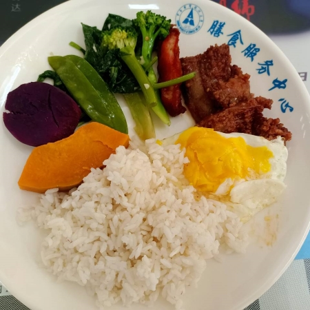
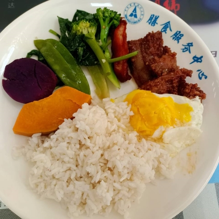

食堂
八食堂自选



这是我大二下期末复习的时候发现的，贼好吃。虽然之前也吃过，但是这次发现了两个让我非常惊艳的食物。
一个是荷包蛋，一个是扣肉。
为什么说让我惊艳，因为荷包蛋真的像家里的那种味道，不是塑料的感觉，或者煮得很干。我觉得在外面很难吃到这么好吃的蛋。
然后那个扣肉，真的瘦的肥的都很好吃，像红烧猪脚的味道，超级好吃，一点都不腻。
这个饭也是我在大二下学期新发现的美食，之前不愿意去尝试五食堂新的食物，但是一旦尝试，确实是真香了。
这个饭的肉很新鲜，不会有留久的味道，毕竟是食堂，新鲜度还是很放心的。
可能仔细一想，平时奥尔良鸡肉都是在炸鸡店直接吃，送饭吃好像有点奇怪，但是我试了一下，其实也还好，只是我们平时可能直接吃惯了。